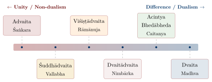
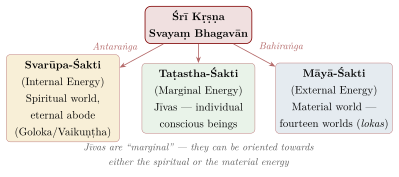

Chapter 8: Other Schools of Vedānta and Related Theologies¶
Form after Form
rūpaṃ rūpaṃ pratirūpo babūva
tad asya rūpaṃ praticakṣaṇāya
He became form after form; each form of His is for the purpose of making Him known.
— Bṛhadāraṇyaka Upaniṣad 2.5.19
8.1 Introduction: Beyond the Three Great Schools¶
While Advaita, Viśiṣṭādvaita, and Dvaita are the most widely known Vedānta schools, the Vedāntic tradition is far richer than these three alone. Several other ācāryas offered their own interpretations of the prasthānatraya, most of them within Vaiṣṇava devotional traditions, and Śaiva theologians developed parallel systems (Figure 8.1).

8.2 The Early Bhedābheda Tradition¶
The Bhedābheda (difference-and-non-difference) tradition has ancient roots that predate the major ācāryas. Bhāskara (c. 8th–9th century CE) and Yādava Prakāśa (11th century CE) are among the earliest exponents whose works survive; Bhartṛprapañca, an earlier Vedāntin criticised by Śaṅkara, is known only from quotations.
8.2.1 Bhāskara’s Aupādhika-Bhedābheda¶
Bhāskara, a slightly younger contemporary or successor of Śaṅkara, argued that the jīva is both identical with and different from Brahman, depending on the perspective. When considered in its essential nature, the jīva is identical with Brahman; when considered as conditioned by its upādhis (limiting adjuncts), it is different. Crucially, Bhāskara held that the upādhis are real, not illusory as in Advaita. The difference between the jīva and Brahman is therefore a real difference, not an apparent one.
8.2.2 Yādava Prakāśa’s Svābhāvika-Bhedābheda¶
Yādava Prakāśa, who was according to tradition an early teacher of Rāmānuja before the latter developed his own system, held that Brahman naturally (svābhāvika) transforms itself into the jīvas and the world. The difference and non-difference are both natural and real: just as the ocean is both identical with and different from its waves, Brahman is both identical with and different from its transformations (Table 8.1).
| Thinker | Date | Position | Key Distinction |
|---|---|---|---|
| Bhartṛprapañca | pre-Śaṅkara (date uncertain) | Early bhedābheda | Brahman transforms into the world |
| Bhāskara | c. 8th–9th c. CE | Aupādhika-bhedābheda | Real upādhis cause real difference |
| Yādava Prakāśa | 11th c. CE | Svābhāvika-bhedābheda | Natural transformation of Brahman |
| Nimbārka | c. 12th–13th c. CE (disputed) | Dvaitādvaita | Sun and rays analogy |
| Caitanya / Jīva G. | 16th c. CE | Acintya bhedābheda | Inconceivable simultaneous identity and difference |
The later schools described in this chapter can be read as successive answers to the question the early Bhedābheda left open: if Brahman is both identical with and different from the world, what kind of relation is that, and how can it be stated without contradiction?
8.3 Dvaitādvaita — Nimbārka’s Dualistic Non-Dualism¶
Historical Note: Nimbārka (date disputed; often placed c. 12th–13th century CE)
Nimbārka (also known as Niyamānanda), said by tradition to have come from the Telugu-speaking region, propounded the Dvaitādvaita (Dualistic Non-dualism) school. His followers place him much earlier than modern scholars do. He is regarded by his followers as an incarnation of the divine Sudarśana Cakra. His primary work is the Vedānta-Pārijāta-Saurabha, a commentary on the Brahma Sūtra.
For Nimbārka, Brahman is Kṛṣṇa, with Rādhā as his eternal consort and power (śakti). There are three realities — conscious selves (cit), unconscious matter (acit) and God — and the selves and the world are both different and not different from God, as the sun’s rays are distinct from the sun yet inseparable from it, or as a spider’s web is both different from and one with the spider that is its material and efficient cause. The selves are atomic, many and dependent on God. Liberation is reached by a combination of action, knowledge and devotion, with special emphasis on self-surrender (prapatti), and consists in the enjoyment of God’s company. Nimbārka’s answer to the Bhedābheda question is that difference and non-difference are both natural and real, because the world’s dependence on God is itself a kind of non-difference: what cannot exist apart from another is not wholly other than it.
8.4 Śuddhādvaita — Vallabha’s Pure Non-Dualism¶
Historical Note: Ācārya Vallabha (1479–1531 CE)
Vallabhācārya, a Telugu Brahmin who became one of the most influential Vaiṣṇava teachers, propounded Śuddhādvaita (Pure Non-dualism). His primary work is the Aṇubhāṣya on the Brahma Sūtra. He founded the Puṣṭi-Mārga (Path of Grace), one of the major devotional traditions of western India.
Vallabha’s non-dualism is “pure” (śuddha) because it dispenses with māyā. Brahman is Kṛṣṇa, who is being, consciousness and bliss (sat-cit-ānanda). The world is real, not false: it is a real transformation (pariṇāma) of Brahman himself, arising from his own will and delight, and Brahman remains unchanged in becoming it, as gold remains gold in the ornaments made from it. The individual self is a part (aṃśa) of Brahman, identical with him in nature but limited in scope; its bliss is obscured, not by māyā, but by the Lord’s own power of concealment (tirodhāna), and liberation is the restoration of that bliss by his grace (puṣṭi). Grace, not effort, is what counts. The highest goal is loving service (sevā) of Kṛṣṇa, and the initiation of “connection with Brahman” (brahma-sambandha) formally dedicates the devotee’s body, mind, possessions and self to him.
Vallabha argued against both his great predecessors. Against Śaṅkara: if Brahman is pure bliss, why would it project an illusion of suffering? Māyā is then inexplicable, and it is simpler to hold that the world is a real expression of Brahman’s bliss. Against Rāmānuja: if the world is God’s body, God is limited by it, as a soul is by its body; the relation of part and whole, Vallabha held, keeps the identity of nature without that limitation. Vallabha himself, however, classified souls by type — those of grace (puṣṭi), of rule (maryādā) and of the worldly “stream” (pravāha) — so that not all are equally destined for the highest devotion.
8.5 Acintya Bhedābheda — Caitanya’s Inconceivable Difference-and-Non-difference¶
Historical Note: Śrī Kṛṣṇa Caitanya Mahāprabhu (1486–1534 CE)
Caitanya Mahāprabhu, born in Navadvīpa (Bengal), is revered by his followers as an incarnation of Lord Kṛṣṇa Himself. Though he left no philosophical writings of his own, his teachings were systematized by the six Gosvāmīs of Vṛndāvana, particularly Jīva Gosvāmī in his Ṣaṭ-Sandarbha; in the 18th century Baladeva Vidyābhūṣaṇa wrote the school’s commentary on the Brahma Sūtra, the Govinda-Bhāṣya.
The Gauḍīya Vaiṣṇavas gave the Bhedābheda question its most radical answer: the relation between God, the selves and the world is one of simultaneous difference and non-difference that is “inconceivable” (acintya) — not contradictory, but beyond the reach of reasoning, and known only from scripture. Brahman is Kṛṣṇa himself, not an avatāra of Viṣṇu but the Lord in his original form (svayaṃ bhagavān). The relation is explained through Kṛṣṇa’s powers (śaktis), of which three are primary (Figure 8.2). A power is neither identical with nor different from the one who has it, and so, through his powers, God is both one with and other than the world and the selves.

The tradition, drawing on Sanskrit poetics as well as Vedānta, also developed a theology of the relationships (rasas) between the devotee and God (Table 8.2). Liberation is not release but pure love of God (prema), the highest attainment.
| Rasa | Relation | Nature | Exemplar |
|---|---|---|---|
| Śānta | Neutral appreciation | Peaceful contemplation of God’s greatness | The four Kumāras |
| Dāsya | Servitude | Loving service with awe and reverence | Hanumān |
| Sakhya | Friendship | Intimate friendship and equality | Śrīdāmā, Arjuna |
| Vātsalya | Parental love | Protective nurturing love for God as child | Yaśodā, Nanda |
| Mādhurya | Conjugal love | The highest and most intimate loving exchange | Rādhā, the gopīs |
Each successive rasa is considered more intimate and more complete than the preceding one, with mādhurya rasa being the summit of devotional experience.
8.6 Śaiva Vedānta and the Śaiva Siddhānta¶
8.6.1 Śivādvaita — Śrīkaṇṭha’s Śaiva Vedānta¶
Śrīkaṇṭha (date disputed, c. 11th–14th century) authored a commentary on the Brahma Sūtra from a Śaiva perspective, interpreting Brahman as Śiva in a manner close to Rāmānuja’s qualified non-dualism. Appayya Dīkṣita (16th century) defended it in his Śivārkamaṇidīpikā, although he himself was an Advaitin. The Vīraśaiva theologian Śrīpati (c. 14th century) wrote the Śrīkarabhāṣya, expounding “śakti-qualified non-dualism” (Śaktiviśiṣṭādvaita).
8.6.2 Śaiva Siddhānta¶
Śaiva Siddhānta is not a school of Vedānta but an Āgamic theology. Its Sanskrit form (Sadyojyotis, Rāmakaṇṭha, Bhoja, late 7th to 11th centuries) is pluralist and realist, and its Tamil form, founded on Meykaṇṭār’s Civañāṉapōtam (13th century), became a major theology of Tamil Śaivism. Both recognise three eternal categories: the Lord (pati, Śiva), souls (paśu) and bonds (pāśa). The philosophy of the Sanskrit Siddhānta is examined in Chapter 12; Śaiva and Śākta traditions as a whole are treated in Vol. 6 of this series. The non-dual Śaiva philosophy of Kashmir, which engaged with Advaita and offered a dynamic alternative to it, is treated in the same chapter (Section 12.6).
8.7 The Hermeneutical Methods of the Vedānta Schools¶
A central reason for the diversity of Vedānta sub-schools lies in the different hermeneutical methods employed to interpret the Prasthāna-Traya. The Upaniṣads contain statements that appear to affirm both identity (“Tat tvam asi” — That thou art) and difference (“dvā suparṇā sayujā sakhāyā” — Two birds, close companions). How these apparently contradictory statements are reconciled determines the philosophical position of each school (Table 8.3).
| School | Method | How Identity and Difference Statements Are Reconciled |
|---|---|---|
| Advaita | Mukhya-gauṇa | Identity statements are primary (mukhya); difference statements are secondary (gauṇa) or refer to the empirical level |
| Viśiṣṭādvaita | Samānādhikaraṇya | Both are literally true: identity and difference coexist because the jīva is Brahman’s attribute; co-ordinate predication |
| Dvaita | Priority of difference texts | Difference statements are primary; identity statements express similarity or dependence, not ontological identity |
| Śuddhādvaita | Aṃśa-aṃśin | Jīva as part (aṃśa) of Brahman (whole, aṃśin); identity as sharing the same nature, difference as limited scope |
| Acintya B.A. | Śakti-śaktimad | Identity and difference coexist inconceivably through the relation of energy (śakti) to the energetic (śaktimān) |
The disagreement turns largely on implied meaning (lakṣaṇā). When the primary meaning (vācyārtha) of a word leads to absurdity or contradiction, an interpreter may resort to an implied meaning (lakṣyārtha). The Advaitins do so in reading “That thou art” (Section 7.3.7); Rāmānuja insists on primary meaning throughout and argues that the sentence directly affirms the self’s oneness with Brahman as body with soul. Behind this lies a deeper question: what counts as an absurdity that licenses departure from the literal sense? An Advaitin finds absurdity in identifying God and the individual self; a Viśiṣṭādvaitin finds none, given the body–soul relation; a Dvaitin finds it in any statement of identity at all. The same texts, accepted by all, yield different systems because the schools bring different views of what the texts could possibly mean. The Vedāntins made these commitments explicit and argued about them, which is why their commentaries are works of philosophy and not only of exegesis.
8.8 Modern Vedānta¶
In the nineteenth and twentieth centuries Vedānta, above all Advaita, was reinterpreted by thinkers writing in English and in dialogue with Western philosophy and Christianity. Svāmī Vivekānanda (1863–1902), the disciple of Rāmakṛṣṇa, preached a “practical Vedānta”: the realisation that all beings are Brahman should lead not to withdrawal from the world but to service of humanity as worship of God — service of God in the form of the poor (daridra-nārāyaṇa). He presented all religions as paths to the same truth, systematised karma, bhakti, rāja and jñāna yoga as complementary disciplines suited to different temperaments, and argued that Vedānta demands the removal of social inequality, since all beings share the same divine essence.
Śrī Aurobindo (1872–1950) developed an evolutionary metaphysics. The Absolute (saccidānanda) has “involved” itself in matter, and evolution is its progressive self-revelation through matter, life and mind towards a “Supermind”, a truth-consciousness that links the infinite with the finite; his Integral Yoga aims not at escape from the world but at its transformation, and the goal is a divine life on earth. He criticised classical Advaita for its world-negation and argued that the Upaniṣads affirm both the transcendence and the immanence of Brahman. Sarvepalli Radhakrishnan (1888–1975) gave an Advaita interpretation of Indian thought as a whole in dialogue with Western idealism, and his histories did much to fix the image of Indian philosophy as essentially spiritual that this volume questions (Chapter 1). Krishna Chandra Bhattacharyya (1875–1949), the most original of them, developed an interpretation of Advaita in dialogue with Kant, notably in The Subject as Freedom (1930): he distinguished bodily, psychic and spiritual levels of subjectivity, each involving a deeper freedom of the subject from its objects, by a method sometimes compared with phenomenology but developed largely independently of Husserl.
8.9 Comparison and Common Ground¶
Table 8.4 compares the schools discussed in this chapter.
| Topic | Dvaitādvaita | Śuddhādvaita | Acintya B.A. | Śivādvaita |
|---|---|---|---|---|
| Founder | Nimbārka | Vallabha | Caitanya / Jīva G. | Śrīkaṇṭha |
| Brahman | Kṛṣṇa | Kṛṣṇa | Kṛṣṇa | Śiva |
| World | Real, dependent | Real, part of God | Real (energy of God) | Real |
| Jīva–Brahman | Different & identical | Part of Brahman | Inconceivably both | Dependent |
| Mokṣa path | Bhakti + jñāna | Puṣṭi (grace) | Prema-bhakti | Śiva-bhakti |
| Liberation | Eternal service | Loving service | Prema (divine love) | Union with Śiva |
The schools share the authority of the prasthāna-traya, the reality of Brahman as the ultimate cause, the eternity of the individual self, the possibility of liberation, and the importance of hearing scripture and of spiritual discipline. They did not regard their disagreements as complementary perspectives: each argued that the others misread scripture. Modern Hindu thinkers have often cited the Gītā in support of a more inclusive reading:
The Gītā on the Ways to God
ye yathā māṃ prapadyante tāṃs tathaiva bhajāmy aham
mama vartmānuvartante manuṣyāḥ pārtha sarvaśaḥ
In whatever way people approach Me, in that same way do I favour them. People everywhere, O Pārtha, follow My path.
— Bhagavad Gītā 4.11